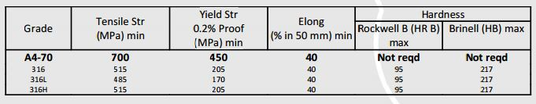
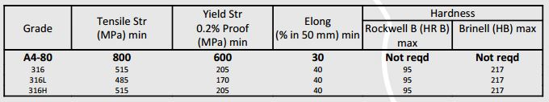
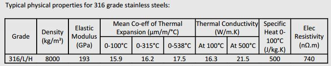
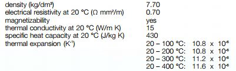
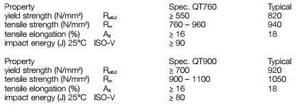

Ref : http://broder-metals-group.com/wp-content/uploads/2014/03/a4-70.pdf
http://broder-metals-group.com/wp-content/uploads/2014/03/a4-80.pdf
http://www.dew-stahl.com/fileadmin/files/dew-stahl.com/documents/Publikationen/Werkstoffdatenblaetter/RSH/Datenblatt_4418_UK_.pdf
A4-70 is an austenitic, acid proof stainless grade (usually 316 material - 316 or 316L) which hasbeen cold worked to provide a minimum tensile strength of 700 N/mm2 (MPa).
A4-80 is an austenitic, acid proof stainless grade (usually 316 material - 316 or 316L) which hasbeen cold worked to provide a minimum tensile strength of 800 N/mm2 (MPa).
DIN ES ISO 3506-1: 1997 specifies the mechanical properties of bolts, screws and nuts made of austenitic(amongst others) stainless steels, when tested over an ambient temperature range of 15oC to 25oC.
The designation A4-80 derives from “A” meaning the material is a cold worked austenitic stainless, dividedinto 5 grades (1-5, hence the “4”) according to material characteristics (see Annex B of DIN ES ISO 3506-1:1997 for full description of each grade). The “80” denotes the minimum tensile strength to be met by thematerial (actually the bolt, screw or nut after manufacture).



1.4418 X4CrNiMo16-5-1
Stainless soft martensitic chromium-nickel-molybdenum steel
C max. 0.06 Cr 15.00 – 17.00 Ni 4.00 – 6.00 Mo 0.80 – 1.50 N ≥ 0.02
1.4418 is characterised by its very good resistance to corrosion in aggressive media coupledwith very good mechanical and impact properties.
DIN 17440 1.4418

